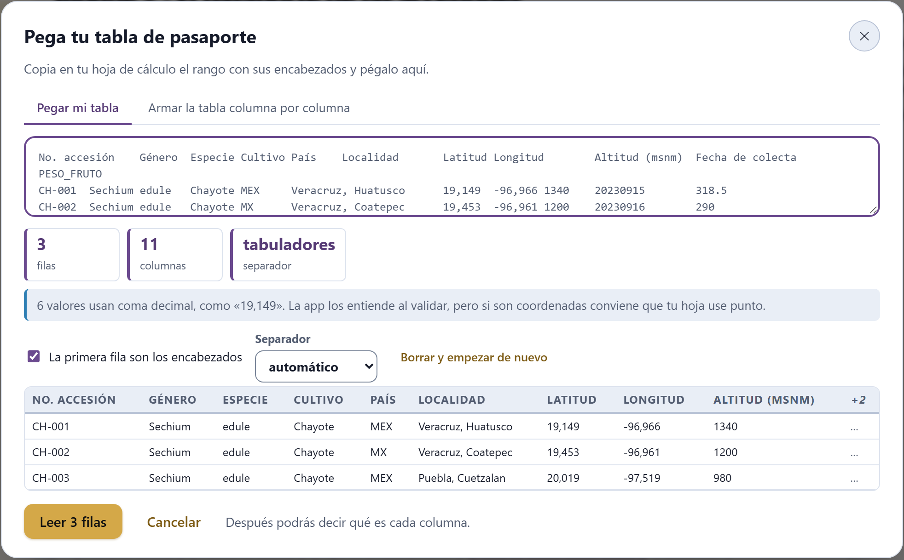
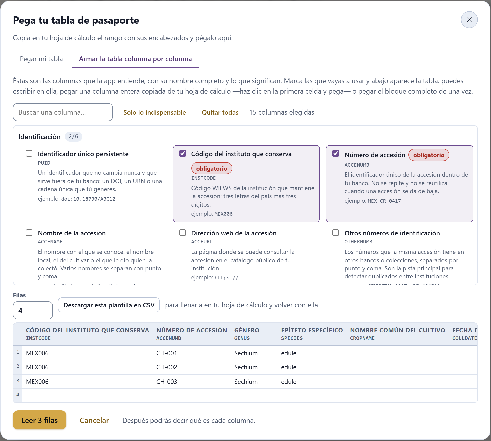
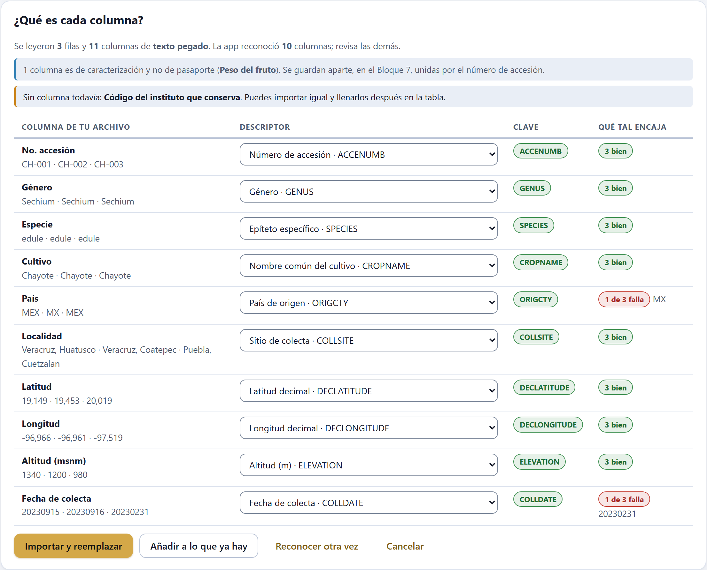
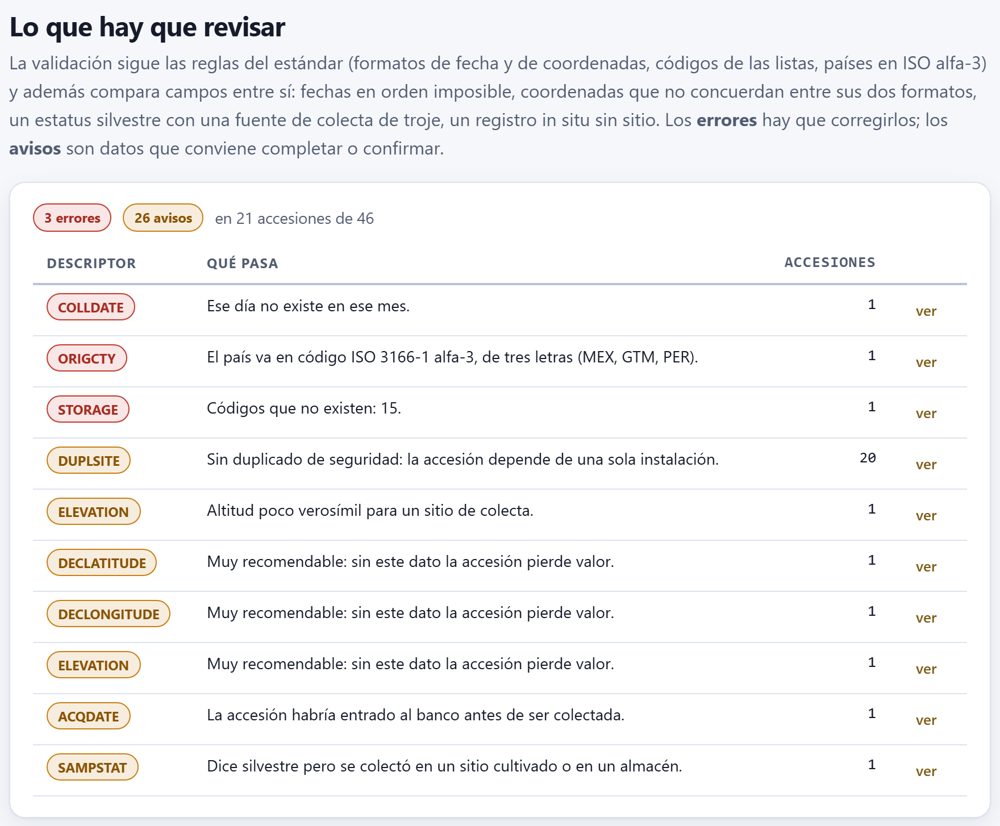
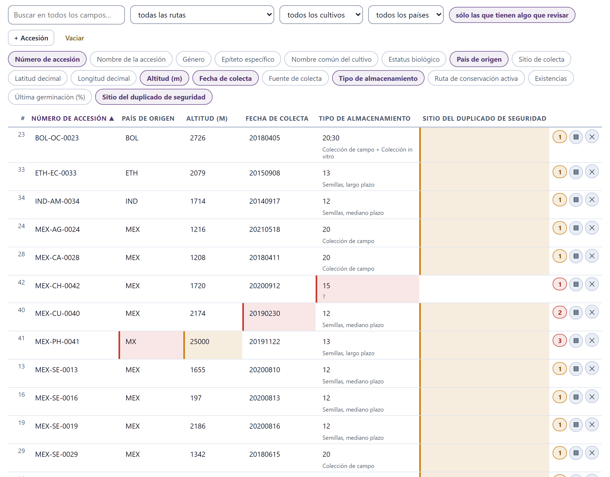
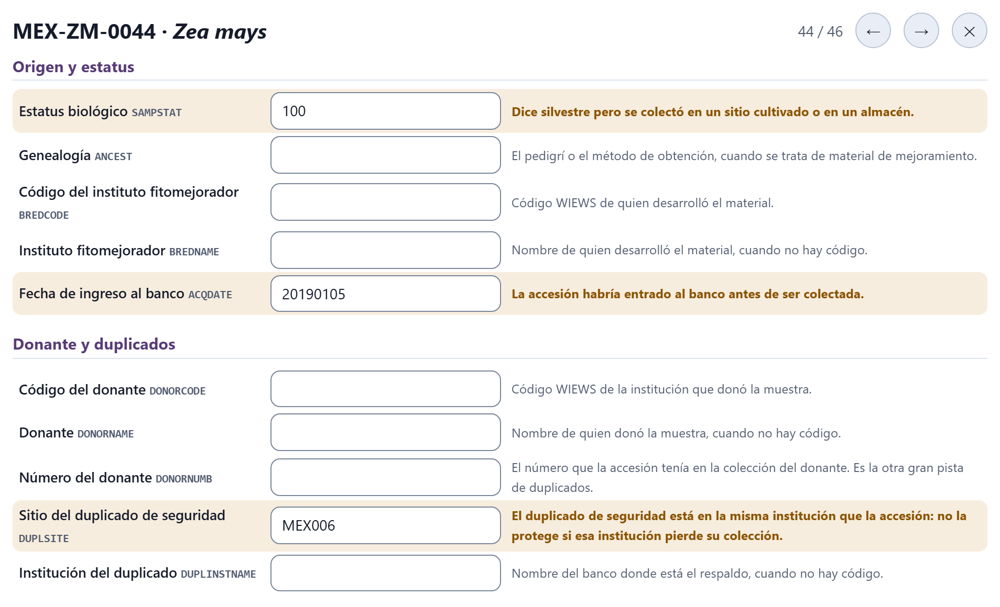
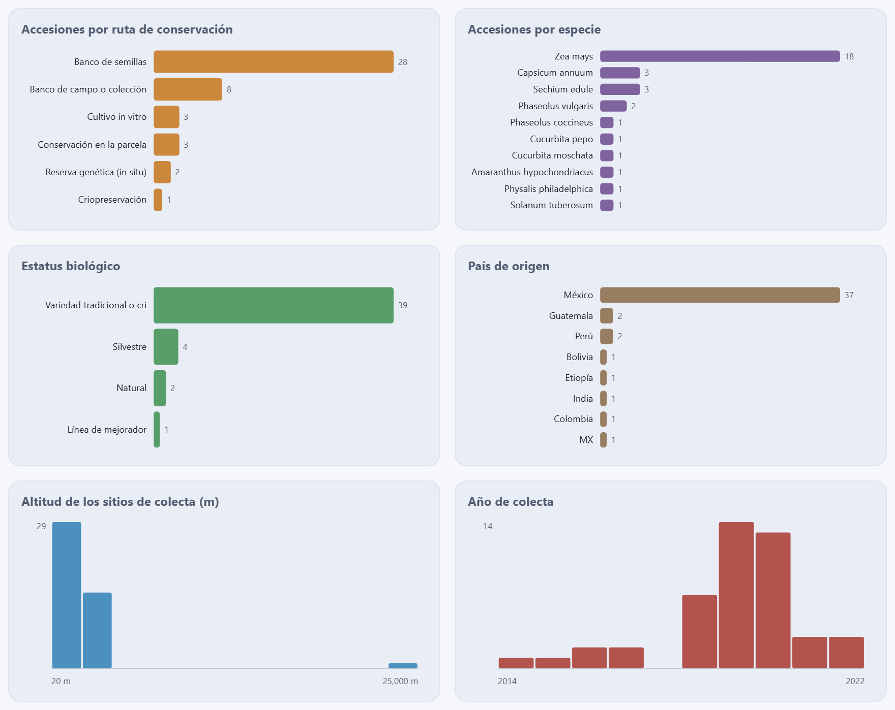
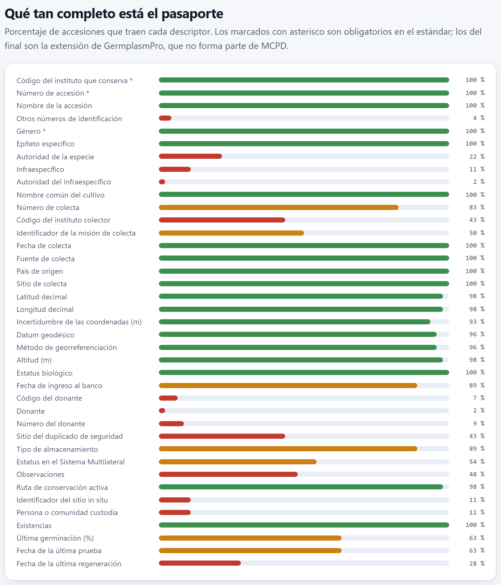
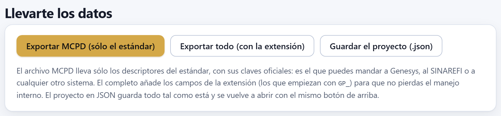

El Bloque 2 es la puerta de entrada de la colección. Aquí llega tu lista de accesiones —de un archivo, de un pegado desde la hoja de cálculo o escrita en una plantilla—, la app reconoce qué descriptor del estándar MCPD v2.1 es cada columna, revisa cada dato por separado y contra los demás, y te deja corregirlo en una tabla o en la ficha de cada accesión. Termina con el retrato de la colección, la completitud de cada descriptor y los archivos para llevarte el pasaporte. Todo lo que hacen los bloques siguientes sale de aquí.
La primera idea de la introducción (I.3) lo resume: la accesión es la unidad y su pasaporte es su identidad. GermplasmPro escribe ese pasaporte con los descriptores multicultivo de pasaporte de FAO/Bioversity, versión 2.1 (MCPD; Alercia, Diulgheroff y Mackay, 2015), la forma que entienden los bancos de germoplasma y los sistemas de información del mundo. Cada descriptor tiene una clave fija en mayúsculas —ACCENUMB, DECLATITUDE, SAMPSTAT— y la app la muestra siempre junto a su nombre completo en español, para que nadie tenga que memorizar abreviaturas.
La app reconoce los 42 descriptores del estándar y los reparte en siete grupos, los mismos con que se ordenan la ficha de cada accesión, el selector del mapeo de columnas y el catálogo de la plantilla. Tres son obligatorios —el código del instituto que conserva, el número de accesión y el género— y doce más son muy recomendables: sin ellos la accesión existe, pero vale menos. A esos 42 suma siete campos propios, la extensión GermplasmPro, cuyas claves empiezan con GP_.
| Grupo | Descriptores | Los muy recomendables del grupo |
|---|---|---|
| Identificación | 6 | — (aquí están dos de los obligatorios) |
| Taxonomía | 6 | SPECIES, CROPNAME (y el obligatorio GENUS) |
| Colecta | 7 | COLLDATE, COLLSRC |
| Sitio y coordenadas | 10 | ORIGCTY, COLLSITE, DECLATITUDE, DECLONGITUDE, ELEVATION |
| Origen y estatus | 5 | SAMPSTAT, ACQDATE |
| Donante y duplicados | 5 | — |
| Conservación y disponibilidad | 3 | STORAGE |
| Extensión GermplasmPro | 7 | — (fuera del estándar) |
La tabla 2.2 sirve de referencia para decidir a qué descriptor corresponde cada columna de tu hoja. El nombre es el que aparece en la app; el ejemplo es el que la app propone en la ficha y en la plantilla. Las descripciones completas están en la propia app: en la ficha, al lado de cada casilla, y en el catálogo de la plantilla (apartado 2.4). Por eso esta referencia va aquí y no en un apéndice: es lo que necesitas a la mano mientras confirmas el mapeo.
| Clave | Nombre en la app | Qué guarda · ejemplo |
|---|---|---|
| Identificación | ||
PUID | Identificador único persistente | Un identificador que nunca cambia y sirve fuera de tu banco · doi:10.18730/ABC12 |
INSTCODE * | Código del instituto que conserva | Código WIEWS: tres letras de país y tres dígitos · MEX006 |
ACCENUMB * | Número de accesión | Único en tu banco; no se repite ni se reutiliza · MEX-CR-0417 |
ACCENAME | Nombre de la accesión | Nombre local o de cultivar; varios, con punto y coma · Cónico norteño; Maíz azul |
ACCEURL | Dirección web de la accesión | Su página en el catálogo público de tu institución |
OTHERNUMB | Otros números de identificación | Los números que tiene en otros bancos, con punto y coma · CIMMYTMA 2317; PI 484512 |
| Taxonomía | ||
GENUS * | Género | Con mayúscula inicial, sin abreviar · Zea |
SPECIES ° | Epíteto específico | Sólo el epíteto, en minúsculas, o «sp.» · mays |
SPAUTHOR | Autoridad de la especie | L. |
SUBTAXA | Infraespecífico | Con su abreviatura de rango · subsp. mexicana |
SUBTAUTHOR | Autoridad del infraespecífico | (Schrad.) H.H.Iltis |
CROPNAME ° | Nombre común del cultivo | Maíz |
| Colecta | ||
COLLNUMB | Número de colecta | El número de la libreta de campo · LAB-2019-033 |
COLLCODE | Código del instituto colector | Código WIEWS · MEX006 |
COLLNAME | Instituto colector | Su nombre, cuando no hay código |
COLLINSTADDRESS | Dirección del instituto colector | Dirección postal |
COLLMISSID | Identificador de la misión de colecta | Reúne las accesiones de un mismo viaje · SIERRA-2019 |
COLLDATE ° | Fecha de colecta | AAAAMMDD, con guiones donde no se sepa · 20190812, 2019---- |
COLLSRC ° | Fuente de colecta | Código de la lista: hábitat silvestre, parcela, troje, mercado… · 26 |
| Sitio y coordenadas | ||
ORIGCTY ° | País de origen | ISO 3166-1 alfa-3 · MEX |
COLLSITE ° | Sitio de colecta | De lo general a lo particular · Oaxaca, Santiago Apoala, 3 km al norte |
DECLATITUDE ° | Latitud decimal | Con signo, negativa al sur · 17.6423 |
DECLONGITUDE ° | Longitud decimal | Con signo, negativa al oeste · -97.3311 |
LATITUDE | Latitud en grados, minutos y segundos | Formato GGMMSSH · 173832N |
LONGITUDE | Longitud en grados, minutos y segundos | Formato GGGMMSSH · 0971952W |
COORDUNCERT | Incertidumbre de las coordenadas (m) | Radio en metros donde está el sitio real · 250 |
COORDDATUM | Datum geodésico | WGS84 |
GEOREFMETH | Método de georreferenciación | GPS, de un mapa, de un nomenclátor o de la descripción · GPS |
ELEVATION ° | Altitud (m) | Metros sobre el nivel del mar · 2180 |
| Origen y estatus | ||
SAMPSTAT ° | Estatus biológico | Código de la lista: silvestre, criolla, mejorado… · 300 |
ANCEST | Genealogía | Pedigrí del material de mejoramiento |
BREDCODE | Código del instituto fitomejorador | Código WIEWS |
BREDNAME | Instituto fitomejorador | Su nombre, cuando no hay código |
ACQDATE ° | Fecha de ingreso al banco | AAAAMMDD; no es la fecha de colecta · 20191104 |
| Donante y duplicados | ||
DONORCODE | Código del donante | Código WIEWS |
DONORNAME | Donante | Su nombre, cuando no hay código |
DONORNUMB | Número del donante | El número que tenía en la colección del donante |
DUPLSITE | Sitio del duplicado de seguridad | Código WIEWS del banco del respaldo; varios, con punto y coma · NOR051 |
DUPLINSTNAME | Institución del duplicado | Su nombre, cuando no hay código |
| Conservación y disponibilidad | ||
STORAGE ° | Tipo de almacenamiento | Uno o varios códigos con punto y coma: 10–13 semillas, 20 campo, 30 in vitro, 40 crio, 50 ADN, 99 otro · 13;40 |
MLSSTAT | Estatus en el Sistema Multilateral | 0 no está, 1 está, 99 otro · 1 |
REMARKS | Observaciones | Lo que no cabe en otro campo, con la clave a la que se refiere al principio |
Cuatro descriptores toman su valor de una lista cerrada de códigos: SAMPSTAT (21 códigos, de 100 silvestre a 999 otro), COLLSRC (22, de 10 hábitat silvestre a 99 otro), STORAGE (9) y MLSSTAT (3); GEOREFMETH admite cuatro textos fijos. No hace falta aprenderlos: en la tabla y en la ficha, al escribir en esas casillas aparece la lista con el significado de cada código, y debajo del valor se lee su nombre (300 · Variedad tradicional o criolla (landrace)). La lista de países es otra cosa: la app trae 119 códigos ISO alfa-3 de uso frecuente en germoplasma, no las 249 entradas del estándar, y por eso un código bien formado que no esté en ella sólo provoca un aviso.
MCPD es un estándar para colecciones ex situ: una población que se conserva en su reserva o en la parcela de quien la siembra no tiene tipo de almacenamiento ni fecha de ingreso al banco, pero hay que registrarla igual. Y un banco necesita saber cosas que el estándar no pide, como cuánta semilla queda o cuándo se probó por última vez. Para eso son los siete campos GP_. Nunca se confunden con los del estándar: en la ficha llevan la marca fuera del estándar, en la completitud van al final y el archivo MCPD no los incluye (apartado 2.9).
| Clave | Nombre en la app | Qué cubre |
|---|---|---|
GP_CONS | Ruta de conservación activa | La ruta con que se maneja hoy el material: seed, field, invitro, cryo, dna, insitu u onfarm. Incluye las dos in situ que STORAGE no contempla. Si se deja vacía, la app la deduce del primer código de STORAGE que tenga ruta (13 → semillas, 20 → campo…); los demás códigos quedan como respaldo. |
GP_SITEID | Identificador del sitio in situ | La clave de la reserva, el predio o la parcela, para poder volver. |
GP_KEEPER | Persona o comunidad custodia | Quién conserva la población, con su consentimiento. |
GP_STOCK | Existencias | Cuánto hay hoy: semillas, plantas, frascos o criotubos, según la ruta. |
GP_GERMPCT | Última germinación (%) | El resultado de la última prueba de viabilidad, de 0 a 100. |
GP_GERMDATE | Fecha de la última prueba | Cuándo se hizo esa prueba, en AAAAMMDD. |
GP_REGENDATE | Fecha de la última regeneración | Cuándo se regeneró, resembró o subcultivó por última vez, en AAAAMMDD. |
La ruta decide mucho en los bloques siguientes: qué alertas da el Bloque 8 y, ya en éste, qué validaciones se aplican. Los cuatro campos de existencias y fechas son el punto de partida del manejo del banco del Bloque 8.
La primera tarjeta del bloque reúne cinco botones. Junto a ellos, el contador (46 accesiones en la colección) y la hora del último guardado en el navegador; la figura I.2 de la introducción muestra esa barra con la colección de ejemplo cargada.
| Botón | Qué hace |
|---|---|
| Abrir un archivo (CSV, TSV o proyecto) | Lee un .csv, .tsv o .txt y pasa al mapeo de columnas (apartado 2.5). Si es un .json guardado con Guardar el proyecto (.json), lo abre directamente, sin mapeo. |
| Pegar desde una hoja de cálculo | Abre el asistente de pegado, con sus dos pestañas: pegar la tabla (apartado 2.3) o armarla columna por columna en la plantilla guiada (2.4). |
| Abrir la colección de ejemplo | Carga las 46 accesiones con que se ilustra este manual (apartado I.7). |
| Empezar en blanco | Deja la colección con una sola accesión vacía y abre su ficha para llenarla (apartado 2.7). |
| Descargar la plantilla | Descarga plantilla-pasaporte.csv: las 49 columnas, con su clave como encabezado, y una fila con el ejemplo de cada descriptor. |
Al leer un archivo, la app adivina el separador —tabulador, punto y coma, coma o barra vertical— eligiendo el que parte todas las líneas en el mismo número de campos, no el que más abunda. Respeta las comillas, de modo que una coma dentro de «Veracruz, Huatusco» no parte la celda, y admite saltos de línea dentro de una celda entrecomillada. Quita la marca de orden de bytes que algunas hojas de cálculo ponen al principio y, si al leerlo como UTF-8 aparecen caracteres rotos, lo vuelve a leer como Windows-1252, la codificación que suelen usar las hojas de cálculo en Windows; así los acentos y las eñes llegan bien. Un encabezado vacío se llama Columna A, Columna B…, como en la hoja, y uno repetido se numera (Sitio (2)) para no perder la columna.
Abrir la colección de ejemplo, Empezar en blanco y abrir un proyecto .json sustituyen la colección entera. Si ya hay accesiones con algún dato, la app pide confirmación y dice cuánto se pierde: Se perderán las 46 accesiones que hay ahora en la colección. ¿Seguir? Si la colección está vacía o sólo tiene filas en blanco, no pregunta. Al importar un archivo o un pegado, en cambio, eliges en el mapeo entre Importar y reemplazar y Añadir a lo que ya hay. Vaciar y el ✕ de cada fila también piden confirmación. Si la colección que vas a reemplazar es tuya, guarda antes el proyecto (apartado 2.9).
La fila de ejemplo de plantilla-pasaporte.csv es sólo una guía de formato (MEX-CR-0417, Zea, 20190812…). Bórrala antes de volver con el archivo lleno, o entrará como una accesión más. Las columnas que no vayas a usar puedes dejarlas vacías o quitarlas: la app reconoce las que queden por su clave.
Es la forma más rápida de traer una colección: en tu hoja de cálculo seleccionas la tabla con sus encabezados, la copias, pulsas Pegar desde una hoja de cálculo y pegas con Ctrl + V. No hace falta atinarle al recuadro: el diálogo acepta el pegado en cualquier punto. El botón Pegar del portapapeles hace lo mismo con un clic, si el navegador da permiso para leer el portapapeles; si no lo da, la app te pide pegar con Ctrl + V. También sirve texto separado por comas, por punto y coma o por tabuladores, escrito o copiado de cualquier otro lado.
La idea del asistente es que nadie pulse «leer» a ciegas. En cuanto el texto entra, la app lo lee y enseña qué entendió, antes de importar nada:

La casilla de encabezados la marca la app la primera vez. Para decidir compara la primera fila con las que le siguen: un título no tiene la forma de los datos que encabeza —no es un número sobre una columna de números, ni una fecha sobre fechas, ni un código como MEX-001 sobre códigos—. Si la tabla sólo tiene texto, busca que la primera fila parezca un título: sin números, sin celdas vacías y sin textos repetidos. Si se equivoca, basta desmarcar o marcar la casilla. Sin encabezados, las columnas se llaman Columna A, Columna B…, y en el mapeo eliges a mano qué es cada una.
| Lo que dice el aviso | Qué pasó y qué hacer |
|---|---|
| «1 fila no tiene el mismo número de celdas que las demás (3)…» | Casi siempre una coma suelta dentro de un texto sin comillas, o celdas combinadas en la hoja. Revisa esa fila en la vista previa; si es una coma, prueba otro separador. |
| «Todo quedó en una sola columna…» | Si tu tabla tenía más columnas, el separador no es el correcto: elígelo en Separador. Si copiaste a propósito una sola columna, sigue adelante. |
| «6 valores usan coma decimal, como «19,149»…» | Es informativo: la app convierte la coma en punto al validar e importar números y coordenadas. Aun así, conviene que tu hoja use punto. |
| «Sólo hay una fila y se está tomando como encabezado…» | Copiaste sólo los títulos, o una sola fila de datos que parece título. Desmarca la casilla de encabezados si era un dato, o vuelve a copiar la tabla completa. El botón queda desactivado hasta corregirlo. |
Cuando todo está en orden, el botón principal dice cuántas filas va a leer (Leer 3 filas) y, al pulsarlo, el diálogo se cierra y aparece el mapeo de columnas del apartado 2.5.
Las figuras 2.1 y 2.3 usan este pegado, copiado de una hoja de cálculo (las columnas van separadas por tabuladores; aquí se recortan):
El asistente lee 3 filas y 11 columnas separadas por tabuladores, marca solo la casilla de encabezados y avisa de los 6 valores con coma decimal. Lleva a propósito tres problemas que el mapeo descubre: un país de dos letras, un 31 de febrero y una columna de caracterización.
La segunda pestaña del asistente, Armar la tabla columna por columna, es para quien no tiene la tabla armada o no sabe cómo llamar a las columnas. Muestra el catálogo completo de lo que la app entiende, con el nombre de cada columna, su clave, qué significa y un ejemplo; marcas las que vas a usar y debajo aparece una tabla lista para llenar.

El catálogo tiene 86 columnas en doce grupos que se abren y se cierran: los ocho del pasaporte (los 42 descriptores MCPD y los 7 de la extensión) y cuatro de caracterización, con 37 descriptores que no son pasaporte: Agronómicas y de la planta (11), Morfológicas del fruto (10), Químicas y de calidad (12) y Semilla (4). Estos últimos llevan su unidad entre paréntesis —Peso del fruto (g), Sólidos solubles (°Brix), Vigor de la planta (1–9)— y una línea que dice cómo se mide. Al lado del nombre de cada grupo, un contador dice cuántas columnas tiene o, si ya marcaste alguna, cuántas de ellas (2/6). Los tres descriptores obligatorios llevan la marca obligatorio.
| Control | Para qué sirve |
|---|---|
| Buscar una columna… | Filtra el catálogo por nombre, por clave o por lo que dice la descripción, sin importar acentos ni mayúsculas: «fruto» encuentra nueve columnas de caracterización. Los grupos con coincidencias se abren solos. |
| Sólo lo indispensable | Deja marcadas sólo las 15 columnas obligatorias y muy recomendables (tabla 2.1). Es la selección con que se abre la pestaña. |
| Quitar todas | Desmarca todo, para empezar tu propia selección. |
| Filas | Cuántas filas tiene la rejilla, de 1 a 500; empieza en 10. |
| Descargar esta plantilla en CSV | Descarga plantilla-germplasmpro.csv sólo con las columnas marcadas, con las claves como encabezados y con lo que ya escribiste en la rejilla. Sirve para llenarla en tu hoja de cálculo y volver con ella. |
Cada columna marcada aparece en la rejilla con su nombre completo y su clave debajo, en el orden en que la marcaste. Se escribe en ella como en una hoja. Lo que la hace práctica es el pegado de columnas enteras: copia en tu hoja de cálculo una columna de valores —los números de accesión, por ejemplo—, haz clic en la primera celda de la columna correspondiente de la rejilla y pega. Los valores se reparten hacia abajo, uno por fila, y si son más que las filas, la rejilla crece hasta 500. Si lo que copiaste tiene varias columnas, se reparten también hacia la derecha, sobre las columnas que siguen. Un valor suelto, sin tabuladores ni saltos de línea, se pega normalmente en la celda donde está el cursor, igual que en el buscador.
Las filas vacías no cuentan: el botón principal dice cuántas filas tienen algo (Leer 3 filas). Al pulsarlo, la rejilla sigue el mismo camino que un pegado y llega al mapeo de columnas, donde las claves se reconocen todas a la primera.
Venga de un archivo, de un pegado o de la plantilla, la tabla pasa por la tarjeta ¿Qué es cada columna? antes de entrar a la colección. Arriba, una línea dice qué se leyó (Se leyeron 3 filas y 11 columnas de texto pegado. La app reconoció 10 columnas; revisa las demás.); abajo, una fila por columna de tu archivo, con cuatro datos:
GP_.Los encabezados reales llegan en español, en inglés, con acentos, con puntos, con unidades o con la clave MCPD. Antes de compararlos, la app los normaliza: quita acentos, mayúsculas, espacios y signos, de modo que No. accesión, no_accesion y NO ACCESIÓN son lo mismo. Después busca en tres pasadas, y cada descriptor recibe una sola columna:
ACCENUMB, accenumb o GP_CONS se reconoce primero.GP_KEEPER; existencias, inventario para GP_STOCK, y así con los demás.ELEVATION; Germinación % va a GP_GERMPCT.
Las coordenadas tienen un paso más, porque el encabezado no basta: una columna Latitud puede traer 17.6423 o 173832N. La app mira hasta diez valores y, si la mayoría tiene forma de grados-minutos-segundos, la manda a LATITUDE; si son decimales, a DECLATITUDE (y lo mismo con la longitud), intercambiando las dos columnas si hace falta. Si sólo vienen las coordenadas en grados-minutos-segundos, al importar se calculan las decimales, que son las que usan los mapas.
Como cada descriptor recibe una sola columna, cuando dos columnas compiten gana la primera: en una hoja con Estado, Municipio y Localidad, sólo una llega a COLLSITE y las otras quedan en — no importar —. Si eliges a mano un descriptor que ya tenía otra columna, la otra se desmarca sola. Reconocer otra vez deshace tus cambios y vuelve a la propuesta de la app.
Para cada columna asignada, la app valida todos sus valores no vacíos como si ya fueran de ese descriptor, con las mismas reglas del apartado 2.6. Si ninguno da error, escribe 3 bien (con el número de valores); si alguno falla, 1 de 3 falla (o 2 de 3 fallan) y, al lado, el primer valor que falla. Sólo cuentan los errores, no los avisos. Es la forma más rápida de descubrir una columna mal asignada: si la columna de altitud quedó como fecha de colecta, fallarán casi todas. Vale más verlo aquí que después, con los datos ya dentro.
Debajo de la línea de resumen pueden aparecer dos recuadros:
PESO_FRUTO, BRIX, DIAS_FLORACION…), la app no le busca descriptor MCPD: la aparta, la nombra en el recuadro (1 columna es de caracterización y no de pasaporte (Peso del fruto)) y, al importar, la guarda en la caracterización del Bloque 7, unida a su accesión por el número. MCPD es un estándar de intercambio y no se le cuelgan campos. Una columna con otro nombre, como Peso del fruto, no se reconoce así: o la renombras con la clave, o la cargas en el Bloque 7.Al final, cuatro botones: Importar y reemplazar sustituye la colección por lo leído; Añadir a lo que ya hay lo pone al final de la colección actual (sin buscar repetidos: eso lo hace el Bloque 3); Reconocer otra vez y Cancelar. Al importar, los valores numéricos y las coordenadas pasan de coma a punto decimal y los países, a mayúsculas. La colección importada se guarda de inmediato en el navegador, y junto al contador aparece la hora del guardado (apartado 2.9).
Cada vez que la colección cambia, la app revisa todas las accesiones, campo por campo y entre campos, y da a cada problema uno de dos niveles. Los errores son datos que el estándar no admite —una fecha que no existe, un código que no está en la lista, un obligatorio vacío— y hay que corregirlos. Los avisos son datos que conviene completar o confirmar: un muy recomendable vacío, una altitud rara, dos campos que no concuerdan.
| Tipo de dato | Error | Aviso |
|---|---|---|
| Cualquier descriptor vacío | Si es obligatorio: Falta un dato obligatorio. | Si es muy recomendable. |
Fechas (COLLDATE, ACQDATE, GP_GERMDATE, GP_REGENDATE) | No va en AAAAMMDD con guiones donde no se sepa; año antes de 1700 o en el futuro; mes fuera de 01–12; día fuera de 01–31; un día que no existe en ese mes (30 de febrero). | — |
| Coordenadas decimales | No es un número; fuera de −90 a 90 o de −180 a 180. | Un cero exacto, que casi siempre es un dato faltante escrito como cero. |
| Grados, minutos y segundos | No sigue GGMMSSH (173832N). | — |
| Números | No es un número; germinación fuera de 0–100; incertidumbre o existencias negativas. | Altitud fuera de −430 a 6 500 m. |
País (ORIGCTY) | No son tres letras. | Tres letras que no están en la lista de 119 países. |
Códigos WIEWS (INSTCODE, COLLCODE, BREDCODE, DONORCODE, DUPLSITE) | — | No son tres letras y tres dígitos. DUPLSITE admite varios, separados por punto y coma. |
| Listas de códigos | Un valor que no está en la lista del descriptor; en STORAGE, cualquier código de la lista separada por punto y coma que no exista. | — |
| Lo que se compara | Nivel | Qué dice la app |
|---|---|---|
| Una sola de las dos coordenadas decimales | error | Falta la otra coordenada: una sola no ubica nada. |
| Coordenadas decimales y en grados-minutos-segundos | aviso | No coinciden (difieren en más de 0.02°). |
| Fecha de colecta posterior a la de ingreso | aviso | La accesión habría entrado al banco antes de ser colectada. |
| Última prueba o regeneración anterior al ingreso | aviso | La prueba (o la regeneración) es anterior al ingreso al banco. |
| Estatus silvestre (100) y fuente cultivada o almacén (21, 22, 23, 26, 27) | aviso | Dice silvestre pero se colectó en un sitio cultivado o en un almacén. |
| Estatus criolla (300) y hábitat silvestre (10–15) | aviso | Dice variedad criolla pero se colectó en hábitat silvestre. |
| Ruta in situ con tipo de almacenamiento | aviso | Si tienes las dos cosas, conviene registrar dos accesiones enlazadas. |
Ruta in situ sin GP_SITEID | aviso | Un registro in situ sin identificador de sitio no se puede volver a visitar. |
Ruta ex situ sin DUPLSITE | aviso | Sin duplicado de seguridad: la accesión depende de una sola instalación. |
Ruta ex situ con DUPLSITE sólo en la propia institución | aviso | El duplicado de seguridad está en la misma institución que la accesión: no la protege si esa institución pierde su colección. |
La ruta cambia lo que se exige. A un registro in situ (reserva genética o parcela) no se le piden STORAGE, ACQDATE, DUPLSITE ni INSTCODE: no tiene almacenamiento, no entró a ningún banco y no se duplica en otro. Y el duplicado de seguridad sólo cuenta si al menos uno de los sitios de DUPLSITE es otra institución que la de INSTCODE: una copia en la cámara de al lado no protege de un incendio en el mismo edificio. Esa misma regla es la que usa el recuadro Con duplicado de seguridad del retrato (apartado 2.8). Una accesión sin ruta reconocible —ni GP_CONS ni un código de STORAGE válido— no recibe los avisos del duplicado.
La sección Lo que hay que revisar reúne los problemas de toda la colección, agrupados por descriptor y mensaje, que es como se corrigen: primero los errores y, dentro de cada nivel, los más frecuentes. Encima, tres datos: cuántos errores, cuántos avisos y en cuántas accesiones. El botón ver de cada fila activa el filtro sólo las que tienen algo que revisar, quita los demás filtros, añade a la tabla la columna del problema si no estaba y abre la ficha de la primera accesión afectada.

Los errores sembrados (apartado I.7) que el Bloque 2 puede ver con una sola accesión a la vista son éstos:
| MEX-CU-0040 · Calabaza pipiana | error en COLLDATE: 20190230, un 30 de febrero. |
| MEX-PH-0041 · Frijol tepari | error en ORIGCTY (MX, dos letras) y aviso en ELEVATION (25000 m). |
| MEX-CH-0042 · Chile costeño | error en STORAGE: Códigos que no existen: 15. Sin ruta, tampoco se le pide duplicado. |
| MEX-ZM-0043 · Maíz ancho de riego | tres avisos: sin latitud, sin longitud y sin altitud. |
| MEX-ZM-0044 · Maíz reventador | dos avisos cruzados: estatus silvestre colectado en una troje y fecha de ingreso (20190105) anterior a la colecta. |
| 20 accesiones ex situ | aviso en DUPLSITE: sin duplicado de seguridad. |
Suman 3 errores y 6 + 20 = 26 avisos, en 21 accesiones (las cinco de arriba, más dieciséis que sólo tienen el aviso del duplicado). Las 20 accesiones con duplicado lo tienen en otra institución (NOR051, MEX008, BOL004 o PER001), así que ninguna recibe el aviso de la misma institución; la figura 2.6 lo provoca a propósito. Lo que el Bloque 2 no ve: la longitud sin signo de MEX-ZM-0039 es un número válido (sólo el Bloque 3 descubre que cae fuera de México) y los dos pares de duplicados accidentales son, cada uno por separado, accesiones correctas.
La sección La colección, accesión por accesión muestra la colección en una tabla editable, de 50 en 50 filas, con las flechas ← → y la cuenta (mostrando 1–46 de 46) al pie. Arriba van la búsqueda, los filtros y los botones para añadir y vaciar.

| Control | Para qué sirve |
|---|---|
| Buscar en todos los campos… | Busca en los 49 campos a la vez, sin importar acentos, mayúsculas ni guiones: «chayote» deja 3 filas. |
| todas las rutas, todos los cultivos, todos los países | Filtran por ruta de conservación (sólo las que están en uso), por nombre común del cultivo y por país de origen (con su nombre; un código que no está en la lista, como MX, aparece tal cual). Con la colección de ejemplo, Banco de campo o colección viva deja 8 filas. |
| sólo las que tienen algo que revisar | Deja sólo las accesiones con algún error o aviso: 21 en la colección de ejemplo. |
| + Accesión | Añade una accesión vacía al final y abre su ficha. |
| Vaciar | Borra toda la colección, también la guardada en el navegador, después de pedir confirmación. |
| Las 18 etiquetas de columnas | Eligen qué columnas se ven; las resaltadas están visibles. Hay que dejar al menos dos. Se abre con nueve: número y nombre de la accesión, género, epíteto, cultivo, país, sitio, altitud y ruta. |
Un clic en el título de una columna ordena por ella (▲) y otro invierte el orden (▼); las coordenadas, la altitud y los demás números se ordenan como números. La tabla abre ordenada por número de accesión, y el número gris de la izquierda es la posición de la accesión en la colección, que no cambia al ordenar ni al filtrar. Cada celda se edita escribiendo en ella; el cambio se aplica al salir de la celda y la validación se rehace al momento. Las celdas de códigos ofrecen la lista al escribir y muestran el significado debajo (un ? si el código no existe). Al pasar el ratón por una celda marcada aparece el mensaje del problema. A la derecha de cada fila, ▤ abre la ficha completa y ✕ elimina la accesión, con confirmación.
La ficha muestra los 49 campos de una accesión, en los ocho grupos de la tabla 2.1. El título da el número de accesión y el nombre científico; a la derecha, su posición (44 / 46) y las flechas ← → para pasar a la anterior o a la siguiente sin cerrar el diálogo. Cada renglón tiene el nombre del descriptor con su clave (y un asterisco si es obligatorio), la casilla y, a la derecha, la descripción del descriptor o, si hay un problema, el mensaje en negritas, con el renglón teñido de rojo o de ocre. Las casillas de texto vacías muestran el ejemplo del descriptor como guía.

Lo que escribes en la ficha se aplica al salir de la casilla y todo se actualiza a la vez: la ficha, la tabla, la lista de problemas y el retrato. Empezar en blanco y + Accesión abren la ficha de una accesión vacía, que empieza con 3 errores (los tres obligatorios) y 12 avisos (los muy recomendables); se van apagando conforme la llenas. La ficha se cierra con ✕ o con Esc.
El retrato de la colección empieza con los cinco recuadros que ya presentó la introducción (figura I.3): accesiones, con coordenadas, con duplicado de seguridad (en rojo mientras no llegue al 80 %), países y rutas en uso. Debajo vienen seis gráficas, que se rehacen con cada cambio (figura 2.7):
| Gráfica | Qué cuenta · con la colección de ejemplo |
|---|---|
| Accesiones por ruta de conservación | Cada ruta en uso, declarada o deducida de STORAGE: 28 en semillas, 8 en campo, 3 in vitro, 3 en la parcela, 2 en reserva genética y 1 criopreservada. La accesión sin ruta no aparece. |
| Accesiones por especie | Las diez especies con más accesiones (género y epíteto): Zea mays con 18, Capsicum annuum y Sechium edule con 3. Las 24 están en el recuadro de taxones. |
| Estatus biológico | Hasta ocho estatus: 39 variedades criollas, 4 silvestres, 2 naturales y 1 línea de mejorador. |
| País de origen | Hasta ocho países: México con 37, Guatemala y Perú con 2, y uno cada uno Bolivia, Etiopía, India, Colombia y MX. |
| Altitud de los sitios de colecta (m) | Histograma en 12 clases de igual ancho entre la mínima y la máxima: aquí, de 20 a 25 000 m. Las altitudes vacías no entran; las de 0 m, al nivel del mar, sí. |
| Año de colecta | Histograma en 10 clases con el año de COLLDATE: de 2014 a 2022, con la mayoría entre 2018 y 2020. |

Los nombres largos se recortan en las barras (Variedad tradicional o cri…). Las gráficas cuentan lo que hay escrito, no lo que debería haber: el código MX aparece como un octavo país hasta que lo corrijas a MEX, y la altitud de 25 000 m deforma el histograma. Por eso conviene volver a mirar el retrato después del Bloque 3.
La última sección de resultados da, para cada descriptor, el porcentaje de accesiones que lo traen. La barra es verde desde el 90 %, ocre del 50 al 90 % y roja por debajo del 50 %; un asterisco marca los obligatorios, y al pasar el ratón por un renglón aparece la descripción del descriptor. Para no llenar la lista de ceros, se omiten los descriptores opcionales que ninguna accesión trae; los obligatorios, los muy recomendables y los siete de la extensión aparecen siempre, al final estos últimos.

PUID o ANCEST) no se muestran.Se lee de dos maneras. Por descriptor, dice qué falta en toda la colección: aquí, el sitio del duplicado (43 %) es el hueco más serio de los que importan para conservar, y la fecha de la última regeneración (28 %) el de la extensión. Y contra lo que la validación pide: la fecha de ingreso y el tipo de almacenamiento están en 89 % (41 de 46) y, sin embargo, no producen avisos, porque las cinco accesiones que no los tienen son in situ y no deben tenerlos. La completitud mide presencia, no corrección: MX cuenta como un país presente.
La sección Llevarte los datos tiene tres botones, cada uno con un destino distinto:

| Botón | Archivo | Qué lleva y para qué sirve |
|---|---|---|
| Exportar MCPD (sólo el estándar) | pasaporte-mcpd.csv | Los 42 descriptores del estándar, con sus claves oficiales como encabezados y en el orden de la tabla 2.2. Es el que se manda a Genesys, al SINAREFI o a cualquier otro sistema. |
| Exportar todo (con la extensión) | pasaporte-completo.csv | Los 49 campos: el estándar y, al final, los siete GP_, para no perder el manejo interno. Vuelve a entrar por Abrir un archivo (CSV, TSV o proyecto) con todas las columnas reconocidas por su clave. |
| Guardar el proyecto (.json) | coleccion-germplasmpro.json | Las accesiones tal como están, con todos sus campos, y la caracterización del Bloque 7. Se abre con el mismo botón de arriba, sin pasar por el mapeo, en cualquier navegador o computadora. |
Los CSV salen separados por comas y en UTF-8, y sólo se entrecomillan las celdas que lo necesitan (las que llevan comas, comillas o saltos de línea). Los archivos se exportan con los valores tal como están, errores incluidos: corrige antes lo que la validación marca. El proyecto lleva el pasaporte y también la caracterización del Bloque 7; al abrirlo se restauran los dos. Un proyecto guardado con una versión anterior, que sólo traía el pasaporte, se abre igual y deja la caracterización que ya hubiera.
Cada cambio en la colección —una celda, la ficha, una accesión añadida o eliminada, la colección de ejemplo— se guarda solo en el almacenamiento local del navegador, un instante después, y junto al contador aparece guardado en este navegador · con la hora. Al volver a abrir la app en ese navegador, la colección sigue ahí. No es un respaldo: vive en una sola computadora, en un solo navegador, y se pierde si se borran los datos de navegación. El respaldo es el proyecto .json; guárdalo al terminar cada sesión de trabajo.
| Lo que ves | Por qué pasa y qué hacer |
|---|---|
| Los acentos llegan rotos (é, �) | La app ya prueba UTF-8 y Windows-1252; si aun así salen mal, guarda la hoja como «CSV UTF-8» o usa el pegado, que no depende de la codificación. |
| Leer 0 filas o el botón desactivado | Copiaste sólo los encabezados, o la casilla de encabezados se comió la única fila (tabla 2.4). En la plantilla, ninguna fila tiene datos. |
| En el mapeo, una columna quedó en — no importar — | Su encabezado no se parece a ningún sinónimo, o su descriptor ya lo tomó otra columna. Elígelo a mano en el selector. |
| Qué tal encaja dice que fallan casi todos | La columna está asignada al descriptor equivocado. Cambia el selector antes de importar. |
| Las coordenadas quedaron como texto o en otra columna | Venían en grados-minutos-segundos con otra forma, o con coma decimal y separador coma. Revisa el separador en el asistente y el selector de la columna en el mapeo. |
Todas las accesiones tienen Falta un dato obligatorio. en INSTCODE | Tu archivo no traía el código del instituto. Agrega la columna en tu hoja y vuelve a importar, o escríbelo en la tabla. |
| Una columna de caracterización entró al pasaporte | Sólo se aparta si su encabezado es una clave exacta del catálogo (PESO_FRUTO). Ponla en — no importar — y cárgala en el Bloque 7. |
| La colección desapareció al volver a abrir la app | Se abrió en otro navegador o con los datos de navegación borrados. Abre el proyecto .json. |
| Si tu colección está en una hoja de cálculo | entonces cópiala con sus encabezados y usa Pegar desde una hoja de cálculo; revisa las tarjetas y los avisos antes de leerla. |
| Si no sabes cómo llamar a tus columnas | entonces arma la tabla en la plantilla guiada, empezando por Sólo lo indispensable, o descárgala en CSV para llenarla en tu hoja. |
| Si en el mapeo una columna falla en Qué tal encaja | entonces mira el primer valor que falla: si es uno, impórtala y corrígelo en la tabla; si son casi todos, cambia el descriptor. |
| Si la validación da errores | entonces corrígelos antes de seguir; los avisos del duplicado de seguridad y los muy recomendables vacíos son trabajo pendiente de la colección, no de la captura. |
| Si una accesión ex situ sólo tiene copia en tu propia institución | entonces no tiene duplicado de seguridad: gestiona uno en otro banco y regístralo en DUPLSITE. |
| Si terminaste de cargar y corregir | entonces guarda el proyecto .json y pasa al Bloque 3, antes de cualquier análisis. |
Lo que corrijas aquí lo ven todos los bloques; el Bloque 3 busca después lo que una accesión sola no deja ver: coordenadas fuera de su país, nombres desordenados y la misma colecta entrada dos veces.